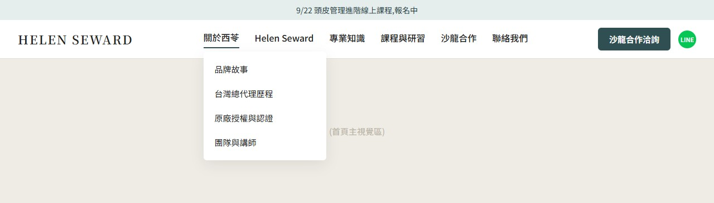
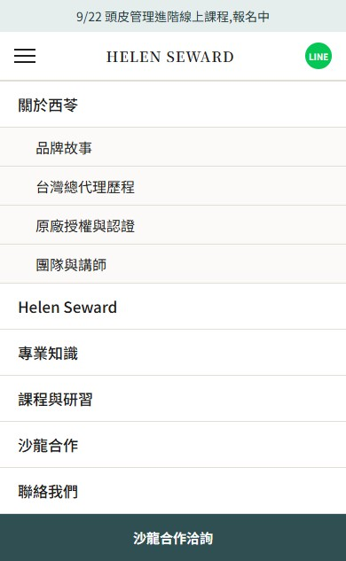

廣告負責開口,網站負責讓人相信,表單和 LINE 負責把人留下來。
官網從「購物站」改為「品牌形象站」。對象是沙龍老闆、設計師、頭皮管理師,不是一般消費者。
網站在整條行銷流程中的位置:
| 階段 | 工具 | 網站要做的事 |
|---|---|---|
| 觸及 | FB / IG 影片廣告(開啟對話、填寫 FB 表單) | 不經過網站 |
| 深入了解 | 廣告內的「查看品牌」「看產品系列」「看課程」連結 | 承接想多看一點的人:品牌背景、產品系列、專業知識、課程 |
| 留下資料 | 網站表單、LINE 官方帳號 | 先向 ShopLine 業務做可行性評估:產品落地頁、文章頁、聯絡我們頁能否加表單;不行的話,改放外掛擴充按鈕(外連),例如「加 LINE 諮詢」或連到表單頁的按鈕 |
| 後續跟進 | 真人客服 | 表單回覆寄到指定信箱,一個工作天內回覆 |
2026-09-13 逐頁讀取。
| 項目 | 現況 |
|---|---|
| 首頁 | 1 張無文字橫幅、6 支 YouTube 影片、3 張無文字的系列橫幅、1 組 INDACO 商品格(附加入購物車按鈕)、1 張品牌故事橫幅。全頁沒有一段文字說明品牌是誰、給誰用 |
| 頁首導覽 | 兩個下拉:「西苓國際企業」(品牌故事/原廠授權/認證專利)、「Helen Seward」(11 個產品系列)。沒有專業知識、課程、沙龍合作入口 |
| 品牌頁 | 「品牌故事」有完整文字;「原廠授權」「認證專利」「地中海 Mediter」三頁是空白頁,只有頁首頁尾 |
| 產品系列頁 | 9 個系列頁全部是商品格加購物車按鈕,沒有系列介紹文字;分類頁只有圖片與品名 |
| 商品頁 | 顯示售價與「加入購物車」 |
| 部落格 | 功能已開啟,文章數 0;有一頁殘留「部落格列表」麵包屑的空白頁 |
| 表單 | 全站只有「聯絡我們」彈窗;沒有合作洽詢表單 |
| LINE / 聊天按鈕 | 沒有浮動按鈕;LINE ID 只出現在頁尾文字 |
| 頁尾 | 有聯絡資訊與統編;沒有 FB / IG 社群連結 |
| 促銷頁 | 3 個促銷頁(研習會報名免運、香港運費、2026 周年慶免運費)都顯示「活動尚未開始」 |
| 其他 | 防詐騙宣導頁有未替換的「{shop name}」樣板字;首頁多處連結指向 helensewardtw391.shoplineapp.com 而非 www.ci-ling.com |
台灣本土沙龍髮品品牌,營運公司益家莉有限公司,同樣使用 ShopLine。
導覽列改為六個主項:
| 主項 | 下拉子項 | 對應頁面 |
|---|---|---|
| 關於西苓 | 品牌故事 / 台灣總代理歷程 / 原廠授權與認證 / 團隊與講師 | 品牌頁群 |
| Helen Seward | 義大利品牌介紹 / 產品系列總覽 / 各系列頁 | 產品頁群 |
| 專業知識 | 頭皮管理 / 染燙與結構修護 / 沙龍經營 / 活動紀錄 | 部落格分類 |
| 課程與研習 | 課程總覽 / 近期開課 / 過往研習紀錄 | 課程頁 |
| 沙龍合作 | 合作方式 / 合作沙龍 / 合作洽詢 | 合作頁 + 表單 |
| 聯絡我們 | 電話、LINE、地址、表單入口 | 聯絡頁 |


頁首元件:
由上而下:
原本首頁的 6 支 YouTube 影片,挑 1 到 2 支放進「課程與研習」區塊,其餘移到課程頁。
Google 只讀文字,不讀圖片。 現站「原廠授權」「認證專利」是空白頁,「品牌故事」只有一頁有字,搜尋引擎抓不到品牌與授權的內容。兩條路二選一:
兩條路的內容都一樣,差別只在頁數。建議路線 B,因為每頁可以各自設定搜尋標題與描述。
各頁(或各段)內容:
年資數字統一用「1992 起」。現站品牌故事寫「29 年」、IG 寫「28 年」,改版時統一。
先向 ShopLine 確認:系列頁目前是「商品陳列頁」結構(商品格加購物車按鈕),要改成「介紹頁」結構(文字段落加產品清單),需要確認現行版型或 SHOP Builder 能否做到。確認可行後,每個系列頁改成:
Mediter 系列的 13 個編號子系列,收成一頁,用「依頭皮髮質需求」分組,例如:強健與豐盈、油脂與淨化、修護與護色、舒緩。
ShopLine 內建部落格,後台路徑「網店設計 > 部落格」,最多 10 個分類,每篇可設 SEO 標題、簡介、描述性網址。
建議四個分類:
| 分類 | 對象 | 目的 |
|---|---|---|
| 頭皮管理 | 頭皮管理師、想導入頭皮服務的設計師 | 廣告導流的主要落點 |
| 染燙與結構修護 | 技術型設計師 | 技術操作與產品搭配 |
| 沙龍經營 | 店長與老闆 | 客單價、留客、轉型 |
| 活動紀錄 | 全部 | 證明品牌有在動 |
文章題目由業主決定。 業主在專業上的實務經驗比我們多,我們提供的是市場端的用戶痛點方向(下表),業主依經驗選題與撰寫,我們協助結構與搜尋設定。
用戶痛點方向(2026-09-13 市場調查,來源:Google 搜尋建議詞、PTT 相關看板):
| 方向 | 市場證據 | 誰在問 | 給業主的選題提示 |
|---|---|---|---|
| 頭皮管理師職涯:證照、課程、薪水、工作 | Google 建議詞「頭皮管理」延伸 10 筆,其中證照 2、課程 2、薪水 1、工作 1 | 想加技能或轉職的設計師 | 頭皮管理師要學什麼、證照怎麼取得、沙龍怎麼把頭皮服務排進流程 |
| 頭皮檢測:儀器、費用、診所或沙龍 | Google 建議詞 10 筆(儀、費用、診所、皮膚科、推薦) | 消費者,以及想導入檢測的沙龍 | 沙龍端的頭皮檢測看什麼、跟皮膚科的分工在哪(用「觀察、調理」,不寫診斷) |
| 頭皮出油、頭皮屑、頭皮癢、頭皮味 | Google 建議詞 13 筆(原因、怎麼辦、突然變多);PTT hairdo 板「頭皮」近 20 篇中 8 篇是這四題 | 消費者,到沙龍會問設計師 | 設計師被客人問到時的說法,搭配哪個系列、居家怎麼接 |
| 落髮:換季、產後、壓力、男性稀疏 | Google 建議詞「男性 頭髮 稀疏」;PTT hairdo 板「落髮」20 篇,產後與換季最多 | 消費者 | 沙龍端能做與不能做的邊界、男性稀疏四種類型怎麼判讀 |
| 對產品的懷疑:「頭皮保養產品真的有用嗎」、無矽靈、成分 | PTT hairdo 板該題 8 推、回文串;「產品」20 篇多為求推薦與比較 | 消費者與設計師 | 成分、認證(PHENBIOX、義大利原廠)怎麼講才讓人信 |
| 沙龍經營:客單價、留客、轉型、抽成 | Google 建議詞與 PTT 皆 0 筆,沒有公開搜尋需求 | 業內人,不上公開平台問 | 這一類靠業主與顧問經驗定題,不靠搜尋;IG 現有與沙龍轉型顧問協作的內容可直接轉成文章 |
| 染燙技術:角蛋白矯正、卡色、漂後修護 | Google 建議詞 0 筆 | 技術型設計師 | 同上,靠業主經驗定題;文章的價值在留住設計師,不在搜尋 |
前五個方向有公開搜尋需求,適合做部落格首批;後兩個方向沒有搜尋量,但對合作沙龍有用,可以放第二批。
需要更精確的數字時有兩種外接工具:①Google Ads 關鍵字規劃工具,查每個方向的月搜尋量;②Dcard 美髮版與美髮業 FB 社團,查沙龍經營類的實際討論(PTT 沒有沙龍經營板)。業主需要的話告訴我們。
每篇文章末尾固定一顆按鈕:「想了解怎麼導入沙龍」連合作洽詢表單,加一顆「加入 LINE 官方帳號」。
文案寫作原則:一句一個畫面,不用副詞,不寫「改善、治療、預防」這類療效動詞,涉及頭皮狀態的描述用「幫助、維持、調理」。
課程是主動推播、有時效性,不靠搜尋,所以這一區不做表單,用公告列、LINE 官方帳號與廣告推。
頁面內容:
頁面內容:
表單只做一張:沙龍合作洽詢。 ShopLine 內建「內嵌客製表單」(後台「網店設計 > 內嵌客製表單」),表單是獨立分頁,有專屬網址,回覆可寄到指定信箱,可匯出 CSV。
| 欄位 | 必填 | 型態 |
|---|---|---|
| 您的身分 | 是 | 單選:設計師 / 頭皮管理師 養髮師 / 店長 經營者 / 一般消費者 |
| 店名 | 是 | 文字 |
| 所在地區 | 是 | 下拉:北北基 / 桃竹苗 / 中彰投 / 雲嘉南 / 高屏 / 宜花東 / 離島 |
| 聯絡電話或 LINE ID | 是 | 文字 |
| 想了解的項目 | 是 | 多選:產品導入 / 頭皮管理教育訓練 / 沙龍轉型顧問 / 安排產品說明或示範 |
| 沙龍主要服務 | 否 | 多選:頭皮管理 / 染燙 / 造型 / 其他 |
| 備註 | 否 | 多行文字 |
欄位對齊現行 Messenger 自動回覆收資料的三項(店名、地區、電話或 LINE),日後表單與私訊收到的資料格式一致。送出後顯示:「感謝您留下資料,我們會在一個工作天內與您聯繫。」並附 LINE 官方帳號連結。
表單入口放哪裡(入口 = 連到表單頁的按鈕;若 ShopLine 評估該頁面無法放表單或按鈕,改用外連按鈕):
| 位置 | 形式 |
|---|---|
| 頁首右側固定按鈕 | 按鈕 |
| 首頁「合作洽詢」區塊 | 按鈕 |
| 沙龍合作頁末 | 表單本體或按鈕 |
| 每個產品系列頁末 | 按鈕 |
| 品牌頁群每頁末 | 按鈕 |
| 每篇部落格文章末 | 按鈕 |
| 聯絡我們頁 | 表單本體或按鈕 |
不放:商品單頁、政策頁(運送、退換貨、隱私、條款)、會員頁、課程頁。一頁只放一個入口,放在內容讀完的位置,不做彈窗、不做進站即跳出。
ShopLine 官方文件沒有「型錄模式」或「全站隱藏售價與購物車按鈕」的設定。目前查到的做法:
| 做法 | 效果 | 限制 |
|---|---|---|
| 產品系列頁改成介紹頁,不放商品格 | 訪客在系列頁看不到售價與購物車 | 需先向 ShopLine 確認可行;商品單頁仍會顯示售價與加入購物車 |
| 商品單頁不放進導覽列與任何頁面連結 | 一般訪客走不到商品單頁 | 搜尋引擎仍可能收錄舊商品頁網址 |
| 商品逐一設為「隱藏」 | 商品單頁與搜尋都不出現 | 現有 127 筆商品要逐筆處理;隱藏後現有給特定客戶的下單方式需另外安排 |
| 頁首購物車圖示 | 無法從設定關閉 | 可用自訂 CSS 隱藏,需實測 |
建議:先做前兩項,頁首購物車圖示用自訂 CSS 隱藏並實測。商品是否全部隱藏,依業主現行「主動聯繫的消費者才提供下單方式」的做法決定。
另外三個「活動尚未開始」的促銷頁,改版時關閉或移除,避免訪客點進去看到空頁。
| 廣告類型 | 目的 | 落點 |
|---|---|---|
| FB 對話型廣告 | 直接開啟 Messenger,自動回覆四題分流,收店名地區 | 不進網站 |
| FB 名單型廣告(填寫臉書表單) | 在 FB 內填表,不離開平台 | 不進網站 |
| FB / IG 內容型廣告 | 「看品牌背景」「看這個系列怎麼導入」「看課程」 | 網站品牌頁、系列頁、部落格文章、課程頁 |
網站要裝的追蹤:GTM(ShopLine 官方支援安裝)、Meta Pixel(透過 Facebook 商業擴充套件)、LINE Tag(透過 GTM)。追蹤事件:表單送出、LINE 按鈕點擊、課程頁瀏覽。這三個事件之後可以回傳 Meta 做受眾與最佳化。
網站上所有 CTA 只有兩種:填表、加 LINE。不放購買連結,價格與下單方式由真人客服提供,與現行私訊流程一致。
| 階段 | 內容 | 由誰 |
|---|---|---|
| 第 0 階段 | 向 ShopLine 業務確認:①產品落地頁/文章頁/聯絡我們頁能否放表單或按鈕 ②系列頁能否改介紹頁結構 ③換版型 Ultra Chic 的影響 | 業主聯繫,我方提供問題清單 |
| 第 1 階段 | 版型更換、導覽列重排、聊天小工具安裝、合作洽詢表單建立、追蹤碼安裝 | 我方 |
| 第 2 階段 | 首頁改版、關於西苓頁群、沙龍合作頁、課程頁、聯絡我們頁 | 我方撰稿,業主提供素材 |
| 第 3 階段 | 產品系列頁改介紹頁(5 個系列群) | 我方撰稿,業主核對成分與用途 |
| 第 4 階段 | 部落格上線:業主依痛點方向選題撰寫,我方做結構與搜尋設定;之後每月 2 到 4 篇 | 業主撰稿,我方編輯 |
| 第 5 階段 | 廣告連結切換到新頁面,追蹤表單與 LINE 點擊數 | 我方 |
| 功能 | 官方名稱 | 結論 | 來源 |
|---|---|---|---|
| 部落格 | 部落格(網店設計 > 部落格) | 有;支援 Skya 與 Ultra Chic;分類上限 10、文章上限 3000;每篇可設 SEO | 連結 |
| 表單 | 內嵌客製表單(網店設計 > 內嵌客製表單) | 有;獨立分頁;欄位可自訂與設必填;回覆寄信箱;可匯出 CSV | 連結 |
| 進階分頁編輯 | SHOP Builder | 有;元件含文字、圖文、輪播、影片、折疊段落、部落格、客製化語法;僅 Ultra Chic / Kingsman / Varm / Philia | 連結 |
| 多層目錄 | 進階目錄 Menu Builder | 有;三層;僅 Ultra Chic / Kingsman / Varm / Philia | 連結 |
| 公告列 | 公告欄 | 有;最多 5 則 | 連結 |
| 購物車圖示隱藏 | 頁首設定 | 購物車與會員中心無「無」選項,設定層無法隱藏 | 同上 |
| LINE / Messenger 浮動按鈕 | 聊天小工具(訊息中心 > 客服助手 > 官網聊天小工具) | 有,免費;僅 Ultra Chic / Kingsman / Varm | 連結 |
| GTM | Google 代碼管理工具安裝方式 | 有 | 連結 |
| Meta Pixel | Facebook 商業擴充套件 | 有 | 連結 |
| LINE Tag | 透過 GTM 設定 | 有 | 連結 |
| 型錄模式 | 無 | 官方文件查無 | 無 |